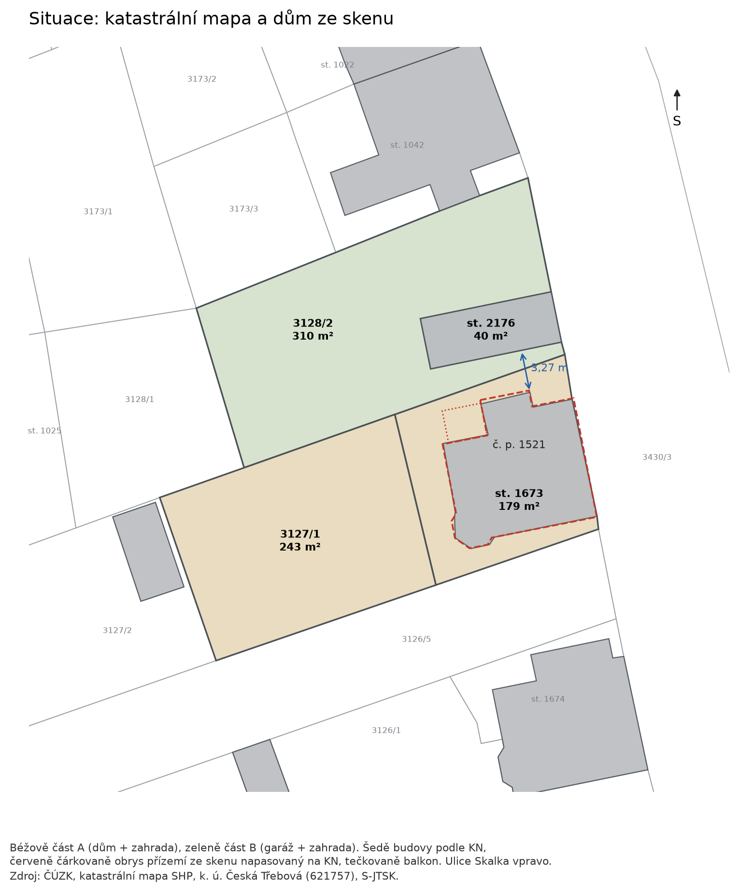
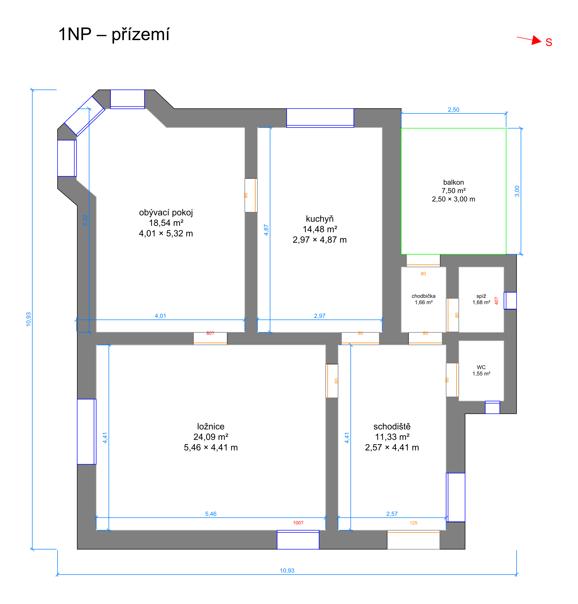
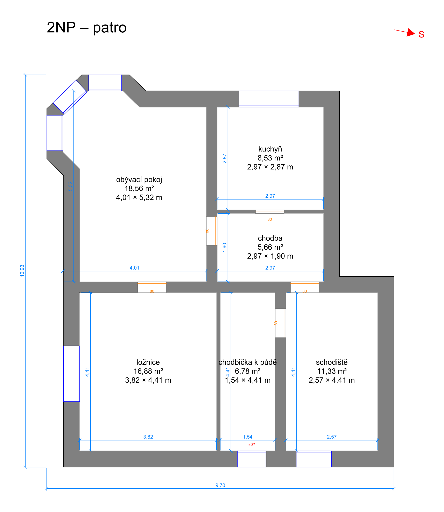
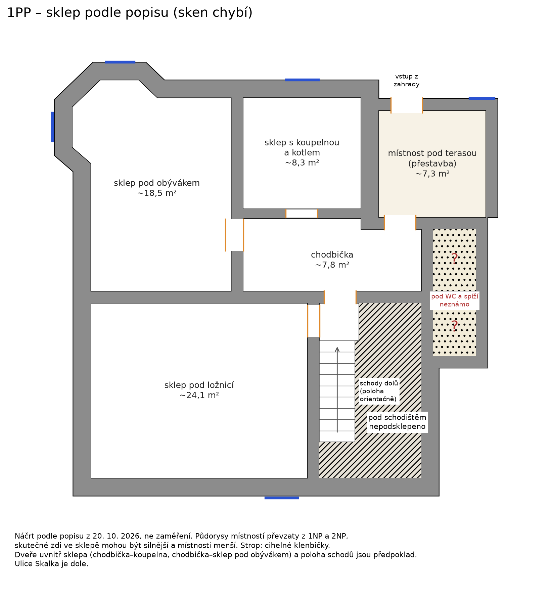
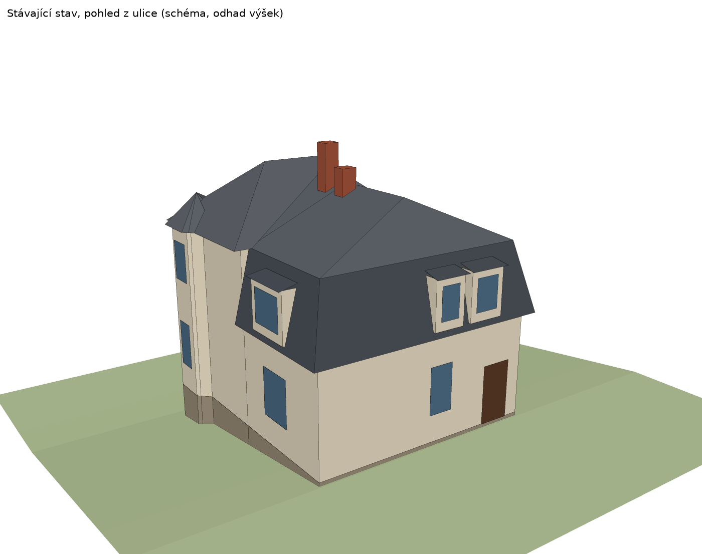
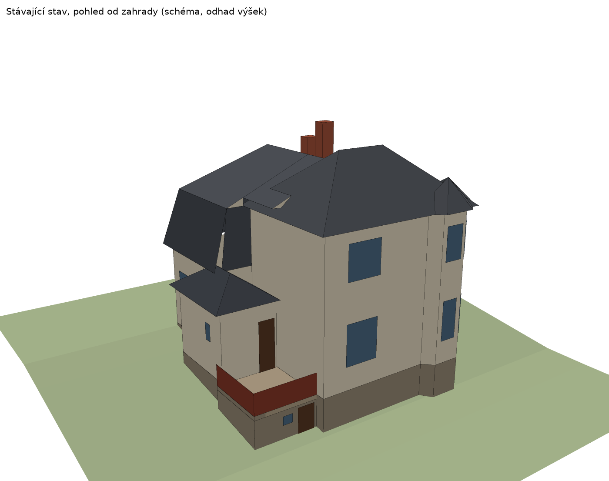

Vila Skalka: stav, varianty a rozpočet
Co dům je, kolik dnes stojí a proč, jak by se dal upravit na dvě domácnosti a co by stála jeho rekonstrukce.
Shrnutí
- Rekonstrukce firmou stojí víc, než kolik domu přidá. Dům za 4,5–4,9 mil. bude po rekonstrukci za 5,5–6,7 mil. mít hodnotu 5,8–7,5 mil. Pro vlastní bydlení to dává smysl, jako investice ne.
- Tržní cena domu dnes nestojí na nákladech rekonstrukce. Domy k rekonstrukci se v Třebové nabízejí za 4,5–5 mil. Kč, protože je kupují lidé pro sebe, kteří část práce dělají sami nebo volí levnější standard. Kdyby se cena počítala od nákladů firmy, vyšla by výrazně níž. Proto má smysl podívat se na cenu z více stran (kapitola Ocenění).
- Dům je menší, než jsme počítali. Sken ukázal užitnou plochu 141 m² bez sklepa, ne 185 m². Rekonstrukce tím zlevní málo (střecha a fasáda zůstávají stejné), hodnota po rekonstrukci ale vychází nižší.
- Střecha nad schodištěm zatéká. Opravit ji je dobré hned, ať se rozhodnete jakkoli.
Dům dnes
Prvorepubliková vila z roku 1930, ulice Skalka, č. p. 1521. Pozemek 773 m² na čtyřech sousedících parcelách:
- dům a zahrada, parcely 1673 a 3127/1, celkem 422 m²,
- garáž a zahrada, parcely 2176 a 3128/2, celkem 351 m², podle územního plánu možná samostatně zastavitelné (neověřeno).
Zastavěná plocha je podle katastrální mapy 96 m², k tomu balkon 7,5 m². Sken domu na katastr sedí: obrysy se překrývají z 97 %, rohy se liší nejvýš o 30 cm. Mezi domem a garáží je 3,27 m.

| Podlaží | Co tam je | Plocha |
|---|---|---|
| 1PP, sklep | sklep pod ložnicí, chodbička, sklep pod obývákem, koupelna s plynovým kotlem, místnost pod terasou; cihelné klenbičky | ~59 m² |
| 1NP, přízemí | schodiště, kuchyň, obývák s arkýřem, ložnice; v křídle WC, spíž a chodbička na balkon | 73,3 m² |
| 2NP, patro | schodiště, chodba, kuchyň, obývák s arkýřem, ložnice, chodbička k půdě | 67,7 m² |
| Půda | pod mansardou a valbou, krov s plným bedněním | nevyužitá |





Technický stav (zjištěno 20. 10. 2026)
| Část | Stav | Co ještě ověřit |
|---|---|---|
| Střecha | Původní krytina z roku 1930, pravděpodobně eternit. Nad schodištěm zatéká, v krytině je díra asi 10 cm. Krov na fotce z půdy vypadá zdravě. | eternit rozborem vzorku; zhlaví krokví nikdo neviděl |
| Sklep | Téměř celý dům je podsklepený, stropy jsou cihelné klenbičky. Nějaká vlhkost tam je. | rozsah vlhkosti měřením |
| Topení | Plynový kotel ve sklepě, radiátory v celém domě. | stav rozvodů |
| Kanalizace | Funkční odpad ve sklepní koupelně. V 90. letech se předělávala, dům je možná napojený na veřejnou kanalizaci. | kamerou nebo u provozovatele |
| Elektroinstalace | Původní nebo hodně stará. | výměna nutná |
| Koupelna | V obytných podlažích chybí, je jen ve sklepě. | – |
| Okna | 16 dvojitých oken a balkonové dveře, 28,9 m². | stav dřeva posoudí truhlář |
Ocenění: kolik dům stojí dnes a proč
Cena domu dnes je výchozí bod všech dalších úvah a zároveň do ní vstupuje cena budoucí rekonstrukce. Proto ukazuji tři metody vedle sebe, každou s předpoklady, aby šlo vidět, co cenu posouvá.
1. Porovnávací metoda: co platí lidé za podobné domy
Je to hlavní metoda znalců i bank. Bere nabídky podobných domů ve stejném městě a upravuje je o rozdíly.
| Dům (nabídky září–říjen 2026) | Plocha | Pozemek | Stav | Nabídka | Kč/m² |
|---|---|---|---|---|---|
| Čechova, Parník | 127 m² | 572 m² | k celkové rekonstrukci | 4,90 | 38,6 tis. |
| Lidická | 76 m² | 361 m² | velmi dobrý | 4,64 | 61,1 tis. |
| Ústecká, Parník | 129 m² | 200 m² | velmi dobrý | 4,75 | 36,8 tis. |
| Moravská | 100 m² | 423 m² | k částečné rekonstrukci | 4,47 | 44,7 tis. |
| Kozlov | 157 m² | 322 m² | neznámý | 5,29 | 33,7 tis. |
| Tylova | 150 m² | 171 m² | rekonstruované jen přízemí | 3,29 | 21,9 tis. |
| Kollárova 320, Parník | 114 m² | 724 m² | neznámý | 2,99 | 26,2 tis. |
Plochy jsou z inzerátů. Někteří prodávající do nich počítají sklep, takže srovnání po m² je jen orientační.
Úprava od nejbližšího srovnání (Čechova, také k celkové rekonstrukci):
| Krok | Výpočet | mil. Kč |
|---|---|---|
| Čechova, nabídka | 4,90 | |
| Větší plocha | 141 m² proti 127 m², 14 m² × 20 000–30 000 Kč (odhad ceny dalšího m² ve starém domě) | +0,28 až +0,42 |
| Větší pozemek | 773 m² proti 572 m², 201 m² × 900–1 650 Kč (stavební pozemky v Třebové) | +0,18 až +0,33 |
| Horší stav | bez koupelny, zatéká, eternit, vlhkost ve sklepě (odhad) | −0,4 až −0,7 |
| Nabídková cena | 4,7–5,3 | |
| Sleva z nabídky při prodeji | realizované ceny bývají o 3–10 % nižší (odhad) | |
| Realistická prodejní cena | 4,2–5,1 |
Dřívější odhad 4,5–4,9 mil. Kč leží uprostřed tohoto rozpětí, a proto ho dál používám jako pracovní. Technický stav domu (zatékání, eternit, vlhkost) ale táhne spíš k dolní polovině.
2. Hodnota po rekonstrukci a výnosová kontrola
Jak by dům vypadal na trhu po opravě:
- Porovnáním: opravené starší domy v Třebové se nabízejí za 37–61 tis. Kč/m², větší domy spíš u dolní hranice. Pro 141 m² při 40–50 tis. Kč/m² a s příplatkem za velkou zahradu 0,2–0,4 mil. Kč to dává 5,8–7,5 mil. Kč (odhad).
- Výnosově (kdyby se oba byty pronajímaly): 2+1 kolem 56 m² ve vile za 11 000–15 000 Kč měsíčně. Po odečtení výpadků, oprav a pojištění (20 %) to je 211–288 tis. Kč ročně. Při výnosnosti 4,5–5,5 % to odpovídá hodnotě 3,8–6,4 mil. Kč (odhad).
Výnosová hodnota vychází níž než porovnávací. Jako pronájem v ubývajícím městě dům nevydělá tolik, kolik stojí. Jeho hodnota stojí na tom, že v něm někdo chce bydlet.
3. Reziduální metoda: co by zaplatil kupec, který rekonstruuje firmou
Tady se do ceny domu promítá cena rekonstrukce:
Při hodnotě po rekonstrukci 5,8–7,5 mil. a rekonstrukci 5,5–6,7 mil. vychází −1,9 až 1,0 mil. Kč. Developer nebo kupec, který vše zadá firmě, by tedy za dům nedal skoro nic.
Citlivost (zisk kupce 12,5 %, mil. Kč). Řádky jsou hodnota po rekonstrukci, sloupce cena rekonstrukce s rezervou:
| Hodnota po \ Rekonstrukce | 4,5 | 5,5 | 6,5 | 7,5 |
|---|---|---|---|---|
| 6,0 | 0,6 | −0,4 | −1,4 | −2,4 |
| 6,5 | 1,0 | 0,0 | −1,0 | −2,0 |
| 7,0 | 1,4 | 0,4 | −0,6 | −1,6 |
| 7,5 | 1,8 | 0,8 | −0,2 | −1,2 |
Každý milion, o který rekonstrukce zdraží, sníží reziduální cenu o milion. Proto je stavebně-technický průzkum tak důležitý: zúží obě strany výpočtu.
Co z ocenění plyne
- Trh dnes platí víc, než dává reziduální výpočet. Kupci domů k rekonstrukci v Třebové jsou hlavně lidé, kteří v domě chtějí bydlet. Část práce udělají sami, volí levnější standard, nebo jim stojí za to zaplatit víc za vilu se zahradou. Proto se domy k rekonstrukci nabízejí za 4,5–5 mil. Kč.
- Reziduální výpočet ukazuje riziko. Dům bez průzkumu je sázka na stav střechy, krovu a vlhkosti. Každé zjištění průzkumu posouvá cenu oběma směry.
- Nezávislý znalecký posudek (6 500–11 900 Kč) dá ceně pevný základ. Znalec použije porovnávací metodu. Výsledky průzkumu (rozbor eternitu, statik, vlhkost) mu poslouží jako podklad pro slevu za stav.
Rozpočet rekonstrukce
Rozpočet je položkový: výměry ze skenu, ceny z ceníku 2026. Liší se ve třech úrovních obnovy, dispozice je ve všech stejná (varianta 2).
| Scénář | Obsah | Bez rezervy | Krajní, rezerva 20–30 % | Pracovní rozpětí |
|---|---|---|---|---|
| R1: Úsporná citlivá obnova | oprava fasády, repase oken, nový plynový kotel | 2,7–6,4 | 3,2–8,3 | 5,1–6,2 |
| R2: Citlivá obnova s tepelným čerpadlem | oprava fasády, repase oken, TČ, lokální rekuperace | 2,9–6,9 | 3,5–8,9 | 5,5–6,7 |
| R3: Energetická obnova | zateplení fasády, nová okna, TČ, rekuperace, fotovoltaika | 3,5–7,9 | 4,2–10,3 | 6,4–7,8 |
| R2-5: jako R2, dvougenerační dům (varianta 5) | bez požárních a akustických úprav, dveří na schodech a průrazů | 2,8–6,5 | 3,3–8,5 | 5,2–6,4 |
Krajní rozpětí sčítá všechny dolní a všechny horní meze najednou, takže je velmi široké. Pracovní rozpětí je střed součtu položek s rezervou 25 % a ±10 %. U domů starších 30 let vycházejí vícepráce průměrně na 28 %. Pro další propočty počítám se scénářem R2, 5,5–6,7 mil. Kč. Odpovídá i srovnání s reálnými projekty: podobně velký starý dům v Sánech (zastavěná plocha 120 m², užitná 160 m²) stál kolem 6 mil. Kč bez vybavení.
Položky scénáře R2 (mil. Kč):
| Položka | Základ výpočtu | Odhad |
|---|---|---|
| Oprava díry ve střeše (hned) | pokrývač; odhad | 0,003–0,01 |
| Vyklizení domu, sklepa a půdy | 40–80 m³ (odhad) × 600–1 100 Kč/m³ | 0,02–0,09 |
| Průzkum, projekt změny stavby na dva byty, dozor | statik, PENB, projekt s požárním řešením a akustikou, rozpočet, dozor | 0,20–0,35 |
| Lešení, bourání, odvoz | lešení ~330 m², 6–12 kontejnerů | 0,10–0,26 |
| Střecha: vláknocementová krytina, demontáž eternitu, měděná klempířina, komíny, zateplení mansardy | 210–230 m² podle 3D modelu | 0,35–0,73 |
| Rezerva na krov | krov vypadá zdravě, zhlaví neviděná; odhad | 0–0,30 |
| Zateplení stropu pod půdou | 91 m² × 260–600 Kč/m² | 0,02–0,05 |
| Vlhkost: drenáž, podřezání nebo injektáž, sanační omítky | obvod 43 m; rozsah upřesní měření | 0,15–0,43 |
| Fasáda: oprava omítky bez zateplení | 270–300 m² × 500–1 200 Kč/m² | 0,14–0,36 |
| Okna: kompletní repase dvojitých oken + vchodové dveře | 28,9 m² × 4 650–7 750 Kč/m² + dveře | 0,16–0,27 |
| Elektroinstalace, dva rozvaděče, revize | 141 m² × 950–1 800 Kč/m² | 0,15–0,31 |
| Voda a kanalizace pro dva byty | rozvody, stoupačky; přípojky beze změny | 0,12–0,33 |
| Tepelné čerpadlo, radiátory, vložkování komína | TČ 200–420 tis. Kč | 0,25–0,50 |
| Lokální rekuperace | 6 místností | 0,07–0,16 |
| Vnitřní omítky, štuky a malby | 567–595 m² stěn a stropů × 500–1 000 Kč/m² | 0,28–0,59 |
| Podlahy včetně odstranění škváry | 141 m² × 900–2 200 Kč/m² | 0,13–0,31 |
| Dvě koupelny | 2 × 80–250 tis. Kč | 0,16–0,50 |
| Dvě kuchyně | 2 × 120–220 tis. Kč | 0,24–0,44 |
| Vnitřní dveře | ~11 ks; odhad | 0,07–0,15 |
| Dva byty: požární dveře, akustický podhled | 0,10–0,19 | |
| Varianta 2: průraz kuchyň–zádveří, zazdívky tří dveří, vstupní dveře horního bytu na schodech, předstěna se stoupačkou, výstup na půdu | odhad | 0,08–0,22 |
| Terasa a schodiště do zahrady | 9 m² + 9 stupňů; odhad | 0,12–0,30 |
| Součet bez rezervy | 2,9–6,9 |
- DPH: ceníky DPH často neuvádějí, nebo jen u části položek. Firma účtuje na rekonstrukci rodinného domu 12 % včetně zabudovaného materiálu, materiál koupený sami stojí 21 %. Přesnou cenu dá až nabídka firmy podle projektu.
- V rozpočtu není: nábytek a vybavení, venkovní úpravy (plot, chodníky), nová vodovodní nebo kanalizační přípojka, statické zajištění podle statika a vestavba podkroví.
- Co rozpočet nejvíc zpřesní: rozbor krytiny, statik (krov, zhlaví trámů, nosné zdi), měření vlhkosti, prohlídka oken truhlářem a kamera do kanalizace. Dohromady desítky tisíc korun.
Ekonomická rozvaha
Rozvaha porovnává, kolik je v domě dnes a kolik by do něj šlo, s tím, kolik bude mít hodnotu po rekonstrukci. Nepředjímá, kdo a jak dům financuje.
| Položka | Základ | mil. Kč |
|---|---|---|
| Tržní hodnota domu dnes | porovnávací metoda, pracovní rozpětí | 4,5–4,9 |
| Rekonstrukce na dvě domácnosti | scénář R2, citlivá obnova s tepelným čerpadlem | 5,5–6,7 |
| Celkem v domě | 10,0–11,6 | |
| Hodnota po rekonstrukci | opravené domy v Třebové, odhad | 5,8–7,5 |
| Rozdíl | o kolik celkové náklady převýší hodnotu | −2,5 až −5,8 |
Jako investice rekonstrukce nevychází. Dává smysl pro vlastní bydlení, kde se srovnává s tím, kolik by stálo bydlení jinde, a kde má cenu i to, co se v m² nevyjádří: vila z roku 1930, zahrada 773 m² a poloha. Ve variantě 5 (dvougenerační dům) je rekonstrukce o 0,3 mil. Kč levnější, na závěru to nic nemění.
Nová zelená úsporám
S bezúročným úvěrem z programu Nová zelená úsporám (NZÚ) se v plánu počítá. Pokrývá jen energetická opatření.
| Energetické položky scénáře R2 | mil. Kč |
|---|---|
| Střecha včetně zateplení mansardy | 0,35–0,73 |
| Zateplení stropu pod půdou | 0,02–0,05 |
| Repase oken | 0,16–0,27 |
| Tepelné čerpadlo a radiátory | 0,25–0,50 |
| Lokální rekuperace | 0,07–0,16 |
| Celkem způsobilé pro NZÚ (odhad) | 0,85–1,71 |
- Výše úvěru: až 0,75 mil. Kč na dílčí renovaci, až 2 mil. Kč na komplexní renovaci rodinného domu, splatnost 10–15 let, úroky platí stát (MŽP).
- Dílčí, nebo komplexní: komplexní renovace vyžaduje energetický standard, kterého citlivá obnova bez zateplení fasády těžko dosáhne. Pro scénář R2 je reálné počítat s dílčí renovací, tedy s 0,75 mil. Kč. Energetická obnova R3 má na komplexní renovaci blíž.
- Co to přinese: podle MŽP ušetří úvěr 1 mil. Kč na 15 let proti komerčnímu úvěru s úrokem 6 % zhruba 0,5 mil. Kč na úrocích.
- Podmínky a nejistoty: trvalý pobyt všech členů domácnosti v domě. Rozpočet programu je proti loňsku výrazně menší a jak program pojede v roce 2027, není jisté.
Co dál
| Krok | Proč | Cena |
|---|---|---|
| Opravit díru ve střeše nad schodištěm | Voda ničí krov a stropy, a tím hodnotu domu. | jednotky tisíc Kč (odhad) |
| Statik a stavebně-technický průzkum | Krov, zhlaví trámů, klenby, průraz do kuchyně ve variantě 2. | 8–25 tis. Kč bez DPH |
| Rozbor krytiny na azbest | Potvrdí eternit a postup při demontáži. | ~2 400 Kč za vzorek (starší údaj) |
| Měření vlhkosti, kamera do kanalizace | Zúží položky vlhkost a rozvody. | kamera 1 400–7 000 Kč |
| Znalecký posudek ceny | Nezávislý podklad k ceně domu. | 6 500–11 900 Kč |
| Územně plánovací informace, památková zóna | Co projde: dvě domácnosti, případně zástavba části s garáží. | správní poplatek |